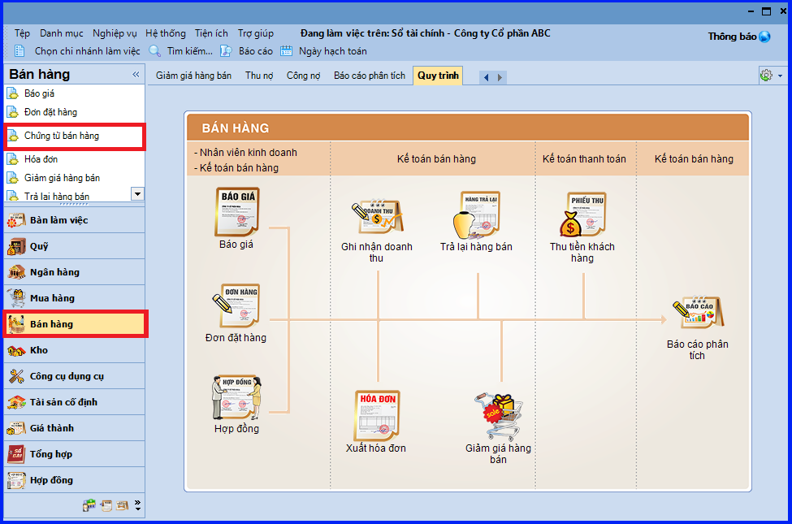
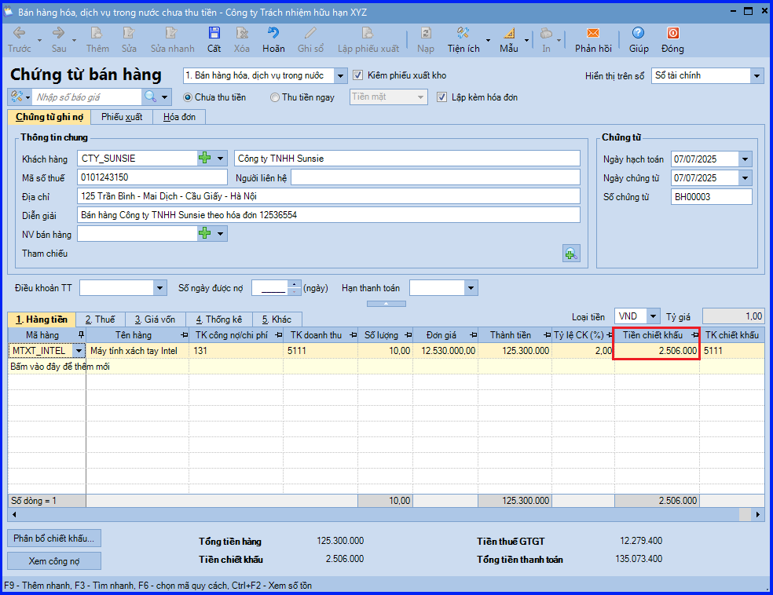
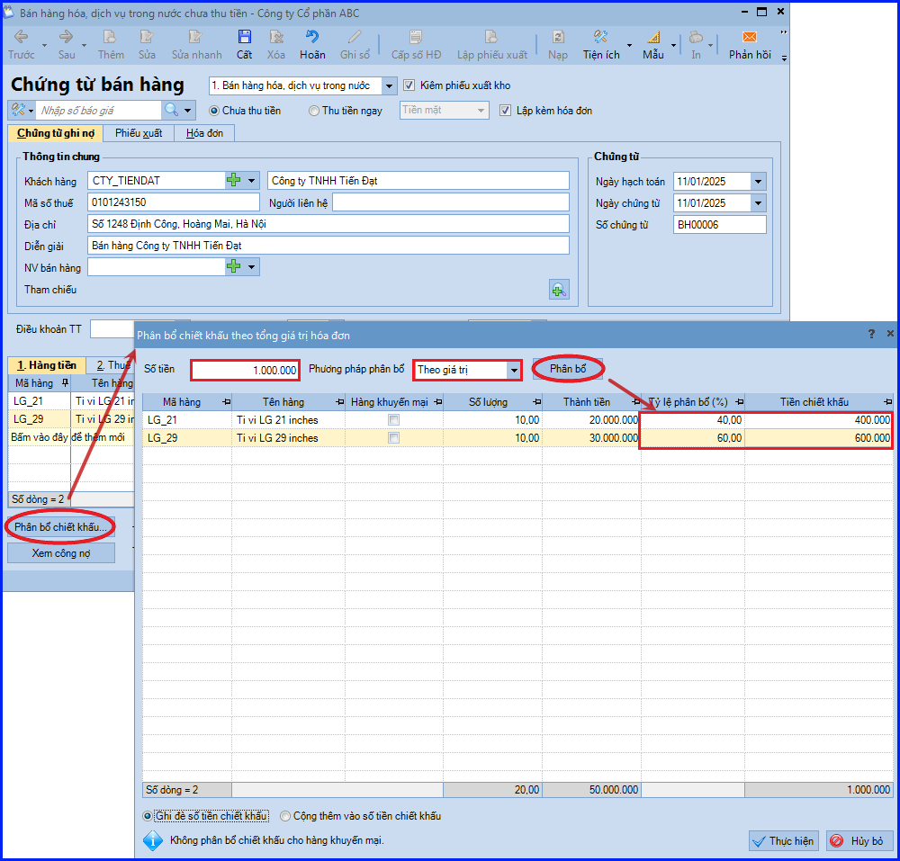
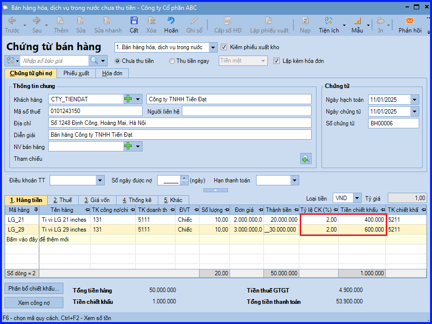

Hướng dẫn cách hạch toán ghi sổ nghiệp vụ bán hàng có chiết khấu thương mại trên phần mềm Misa
Chiết khấu thương mại: Là khoản doanh nghiệp bán giảm giá niêm yết cho khách hàng mua hàng với khối lượng lớn.
Khi ký hợp đồng hoặc đơn đặt hàng giữa đơn vị và khách hàng thỏa thuận nếu khách hàng mua hàng với số lượng lớn sẽ được hưởng chiết khấu thương mại theo tỷ lệ % hoặc số tiền.
Khi đó, quy trình bán hàng hực hiện như sau:
- Khách hàng gọi điện hoặc gửi email có nhu cầu mua hàng đến công ty và đề nghị công ty báo giá hàng. Nhân viên bán hàng căn cứ vào yêu cầu khách hàng gửi báo giá cho khách hàng.
- Sau khi khách hàng gọi điện hoặc gửi mail yêu cầu giao hàng cho khách hàng thì nhân viên bán hàng làm đề nghị xuất kho.
- Kế toán kho lập Phiếu xuất kho, sau đó chuyển Kế toán trưởng và Giám đốc ký duyệt.
- Căn cứ vào Phiếu xuất kho, Thủ kho xuất kho hàng hoá và ghi Sổ kho.
- Nhân viên bán hàng nhận hàng và giao cho khách hàng. Nếu số lượng hàng mua của khách hàng thỏa mãn điều kiện được hưởng chiết khấu thương mại thì nhân viên bán hàng đề nghị kế toán bán hàng cho khách hàng hưởng chiết khấu thương mại.
- Kế toán bán hàng ghi nhận doanh số bán hàng, công nợ và ghi nhận chiết khấu thương mại cho khách hàng hưởng.
- Nhân viên bán hàng yêu cầu kế toán bán hàng xuất hoá đơn cho khách hàng.
- Sau khi khách hàng đã nhận hóa đơn từ nhân viên bán hàng thì yêu cầu khách hàng ký nhận vào vị trí người mua hàng trên hóa đơn và ký vào biên bản xác nhận đã nhận hóa đơn gốc.
1. Cách định khoản hạch toán khi doanh nghiệp bán hàng có chiết khấu thương mại
a. Ghi nhận doanh thu
- Nợ TK 111, 112, 131 - Tổng giá thanh toán theo hóa đơn
- Có TK 511 - Doanh thu bán hàng
- Có TK 33311 - Thuế GTGT phải nộp
b. Ghi nhận khoản chiết khấu thương mại cho khách hàng
- Nợ TK 5211 - Chiết khấu thương mại (theo Thông Tư 200)
- Nợ TK 511 - Doanh thu bán hàng và cung cấp dịch vụ (theo Thông Tư 133)
- Nợ TK 33311 - Thuế GTGT đầu ra được giảm
- Có TK 111, 112, 131
c. Ghi nhận giá vốn hàng bán
- Nợ TK 632 - Giá vốn hàng bán
- Có TK 154, 155, 156, 157…
2. Các bước hạch toán, ghi sổ nghiệp vụ bán hàng có chiết khấu thương mại trên phần mềm Misa
- Vào phân hệ "Bán hàng" => chọn "Chứng từ bán hàng" (hoặc vào tab "Bán hàng" => ấn "Thêm").

- Khai báo các thông tin chung của chứng từ bán hàng.
- Khai báo thông tin các mặt hàng được bán.
- Khai báo chiết khấu thương mại cho các mặt hàng được bán ra theo một trong hai cách sau:
+ Nhập trực tiếp tỷ lệ chiết khấu (hoặc số tiền chiết khấu) cho từng mặt hàng, nếu từng mặt hàng có thông tin chiết khấu cụ thể.

+ Ấn chọn "Phân bổ chiết khấu", nếu chỉ có giá trị chiết khấu chung cho cả hóa đơn.

CHÚ Ý: Trường hợp các mặt hàng đã được hưởng một tỷ lệ chiết khấu rồi, nhưng do khách hàng mua với số lượng lớn nên được hưởng thêm chiết khấu trên tổng hóa đơn. Khi đó, Kế toán sẽ thực hiện phân bổ như hướng dẫn trên, nhưng sẽ tích chọn "Cộng thêm vào số tiền chiết khấu" khi phân bổ.

- Xuất hóa đơn cho khách hàng.
- Các bạn ấn "Cất".
CHÚ Ý: Khi muốn quy đổi Số lượng Vật tư hàng hóa theo 1 đơn vị tính ra đồng thời nhiều đơn vị tính khác nhau, tương ứng với Đơn vị tính đóng gói hàng hóa của đơn vị trên chứng từ bán hàng kiêm phiếu xuất kho.
KẾ TOÁN DIỆU TÂM chúc các bạn làm tốt!
=============================
Nếu bạn muốn thành thạo các kỹ năng làm kế toán trên phần mềm Misa
Thì bạn có thể tham khảo "Khóa Học Thực Hành Kế Toán Trên Phần Mềm Misa" tại Công ty đào tạo Kế Toán Diệu Tâm
Trong khóa học này, bạn sẽ được dạy cách lên sổ sách, lập báo cáo tài chính trên phần mềm Misa
Chi tiết về chương trình đào tạo bạn xem tại đây nhé: Khóa học thực hành kế toán trên Misa
=============================
=============================
Nếu bạn muốn thành thạo các kỹ năng làm kế toán trên phần mềm Misa
Thì bạn có thể tham khảo "Khóa Học Thực Hành Kế Toán Trên Phần Mềm Misa" tại Công ty đào tạo Kế Toán Diệu Tâm
Trong khóa học này, bạn sẽ được dạy cách lên sổ sách, lập báo cáo tài chính trên phần mềm Misa
Chi tiết về chương trình đào tạo bạn xem tại đây nhé: Khóa học thực hành kế toán trên Misa
=============================